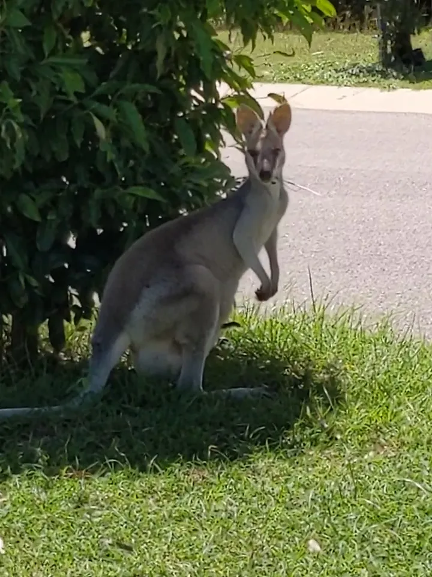

Wild / Kangaroos and wallabies
Kangaroos and wallabies
കങ്കാരുവും വാലബിയും
Family Macropodidae
They graze in paddocks, parks and even front yards, mostly from late afternoon to early morning. Wallabies are smaller members of the same family, and many people call them all kangaroos.

Quick facts
Life in the mob
Eastern grey kangaroos live in groups called mobs, often of 10 or more. They rest in the heat of the day and come out to graze in the late afternoon, through the night and in the early morning. A joey lives in its mother's pouch for months and stays close to her until it is about a year and a half old.
How to stay safe
Are they dangerous?
Kangaroos and wallabies are usually shy. But a big male can attack, especially one that has been fed by people, is looking for a mate, or is sparring with another male.
- Never give them food or water.
- Keep your distance, and stay away from fighting or growling males and from mothers with joeys.
- If one comes towards you, move away slowly. Give a short, deep cough, avoid eye contact, bow your head and keep your arms close to your body.
- Do not turn your back or run. Put a tree or a fence between you and the animal if you can.
- If it attacks, drop to the ground, curl into a ball or lie face down, protect your head and neck, and stay still until it leaves.
- Drive slowly at dawn, at dusk and at night, when they are most active and often cross roads.
Who to call: for an injured, sick or orphaned kangaroo or wallaby, contact RSPCA Queensland. To report someone harming or illegally feeding kangaroos, call 1300 130 372. Harming a kangaroo without a permit can bring a fine of $431 to $23,700.
Watch our video
കങ്കാരുക്കൾക്കൊപ്പം കൃഷികൊണ്ട് ഉപകാരമുണ്ടൊ? (in Malayalam). Watch on YouTube
Our photos


Questions
Are kangaroos dangerous?
Usually not - they are shy. But large males can attack, especially if they have been fed by people. Keep your distance and never feed them.
What is the difference between a kangaroo and a wallaby?
They belong to the same family. Wallabies are generally smaller, and many people call them all kangaroos.
Can I feed kangaroos?
No. Feeding makes them lose their fear of people and can make them aggressive. In some areas of Queensland feeding them is against the law.
When are kangaroos most active?
From late afternoon, through the night, to early morning. Take extra care when driving at those times.
Sources
More from the farm
See all our wildlife and farm pages, or watch our videos on YouTube.
Was this page useful?
Your message goes to Binu at Australian Jeevitham. Please do not put passwords or bank details in it.
General information. Checked against the sources above. For an animal emergency, contact the services named on this page. Last updated: 11 November 2026.